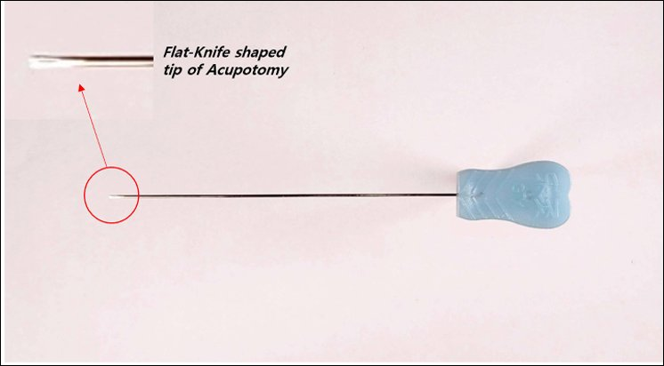
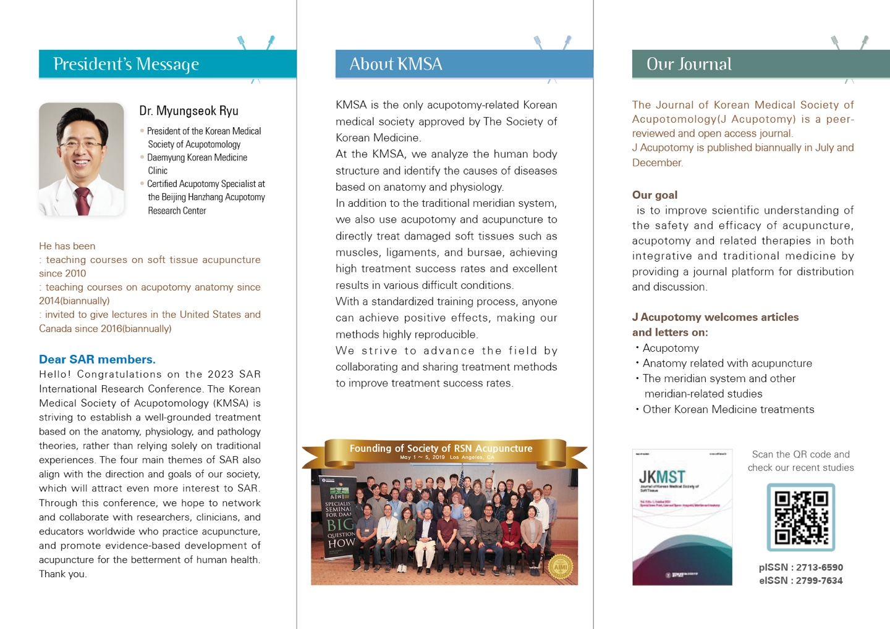

최소 침습으로 수술 효과를 내는 혁신적 치료법
침도요법은 전통 한의학의 침술과 현대 의학의 수술 기법을 결합한 최소 침습 치료법입니다. 침의 장점인 최소 침습성과 칼의 장점인 치료 효과를 동시에 갖춘 특수한 의료 도구입니다.

침도의 특수한 평도날(Flat-Knife shaped tip) 구조
일반 침보다 약간 두꺼운 직경 0.35~0.80mm의 특수 침도를 사용하여, 피부에 큰 상처를 남기지 않으면서도 깊은 곳의 유착된 조직, 굳어진 인대, 손상된 연부조직을 직접 치료할 수 있습니다.
수술처럼 크게 절개하지 않아 흉터가 거의 없고, 시술 당일 일상생활이 가능한 것이 가장 큰 장점입니다.
X-ray, 초음파 등 영상 진단을 통해 병변 부위를 정확히 파악하고 치료합니다. 해부학적 지식에 기반한 정밀한 시술로 안전성을 확보합니다.
만성적으로 굳어진 조직, 유착된 인대를 직접 박리하여 즉각적인 통증 완화가 가능합니다. 일반 침으로 수백 번 시술해도 얻기 어려운 효과를 1회로 달성합니다.
0.35~0.80mm의 미세한 침도로 시술하여 흉터가 거의 없습니다. 수일 내에 시술 부위가 완전히 회복되며, 입원이 필요 없습니다.
시술 당일 일상생활이 가능하며, 회복 기간이 매우 짧습니다. 직장인도 퇴근 후 시술받고 다음날 정상 출근이 가능합니다.
침도요법은 다양한 만성 통증과 난치성 질환에 효과적입니다.
대한침도의학회는 대한한의학회가 공식 인정한 유일한 침도 관련 한의학회입니다.
해부학과 생리학에 근거하여 인체 구조 및 기능적 특성을 분석하고, 침도와 침구를 활용한 연부조직 치료를 연구합니다.
표준화된 교육 과정을 통해 누구나 긍정적인 치료 효과를 얻을 수 있도록 치료법의 재현성을 높이는 데 주력하고 있습니다.
유명석 원장은 현재 대한침도의학회 회장으로 재임 중이며, 침도 치료의 표준화와 세계화를 선도하고 있습니다.
학회 홈페이지 방문하기 →
Journal of Korean Medical Society of Acupotomology (J Acupotomy)는 동료 심사를 거친 오픈 액세스 학술지로, 매년 6월과 12월에 발간됩니다.
침구, 침도 및 관련 요법의 안전성과 효능에 대한 과학적 이해를 향상시키고, 통합 의학과 전통 의학에서 학술지 플랫폼을 제공하여 배포 및 토론을 촉진하는 것을 목표로 합니다.